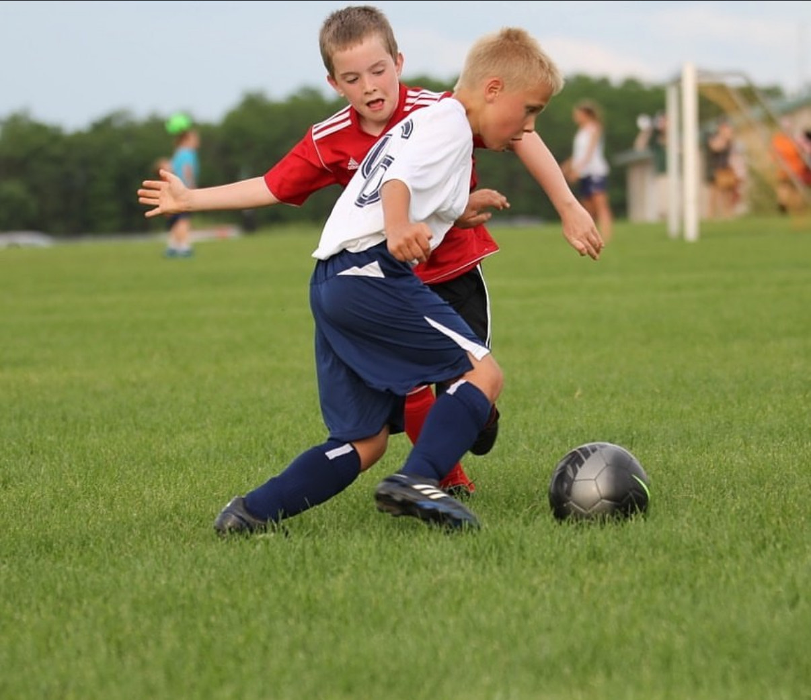
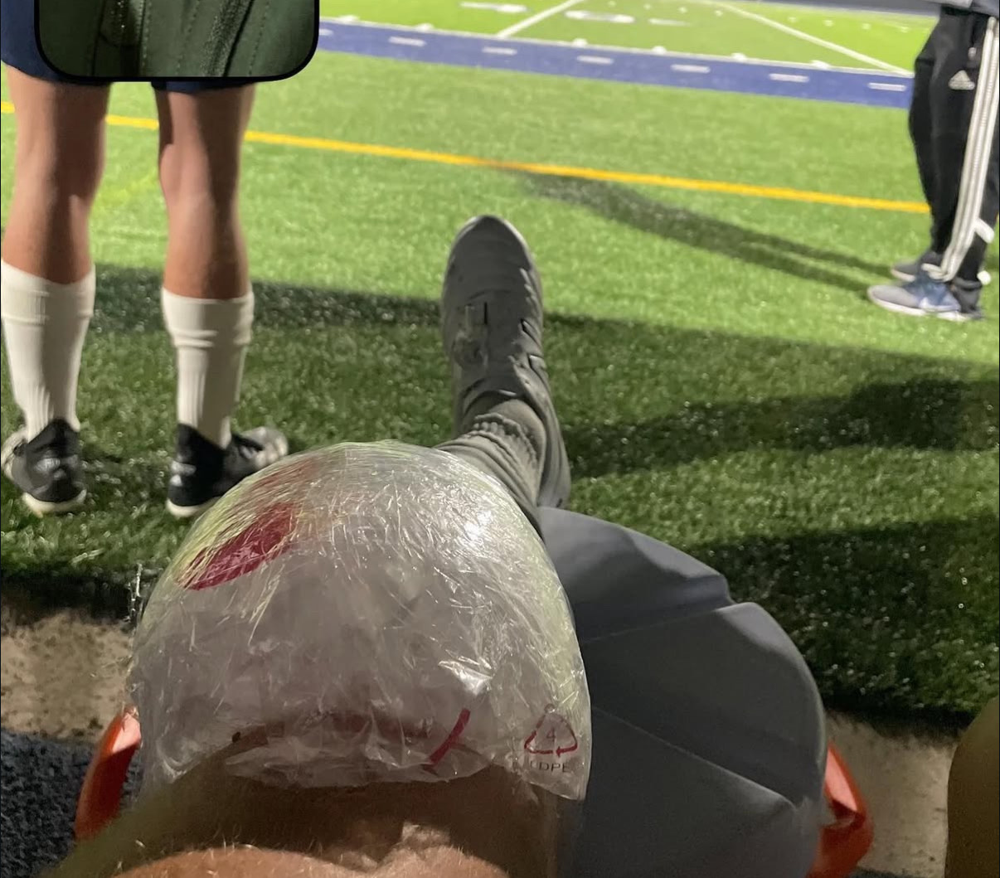
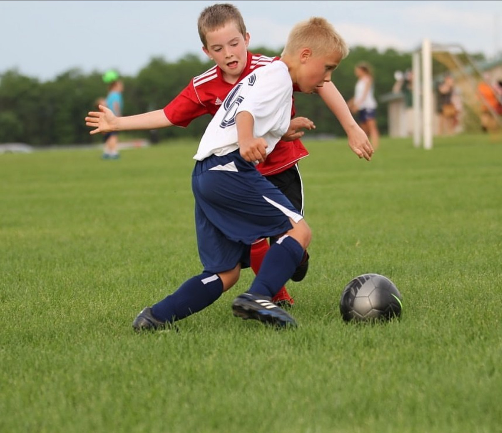
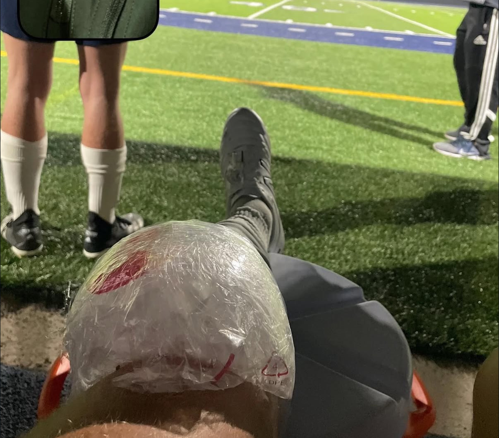
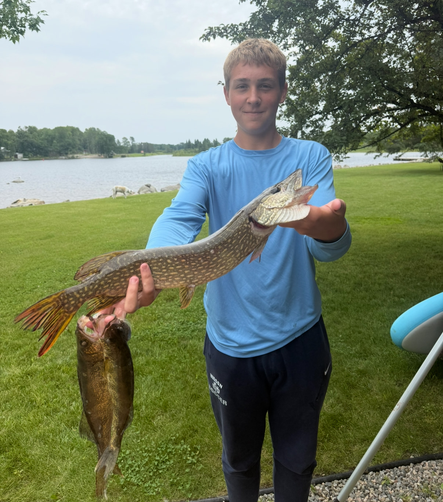
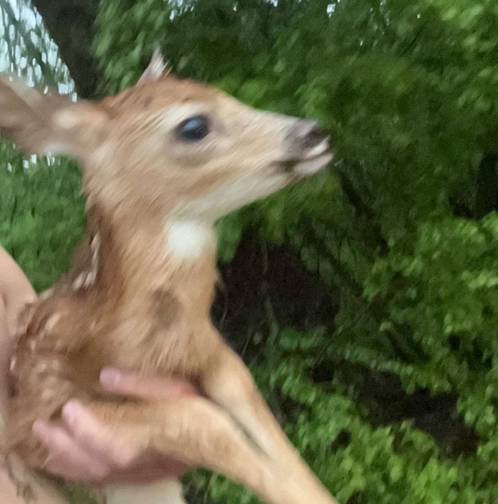
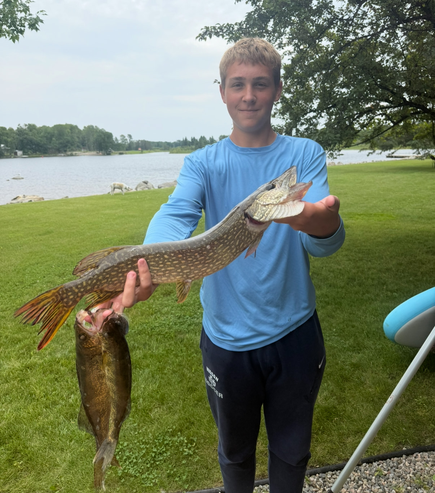
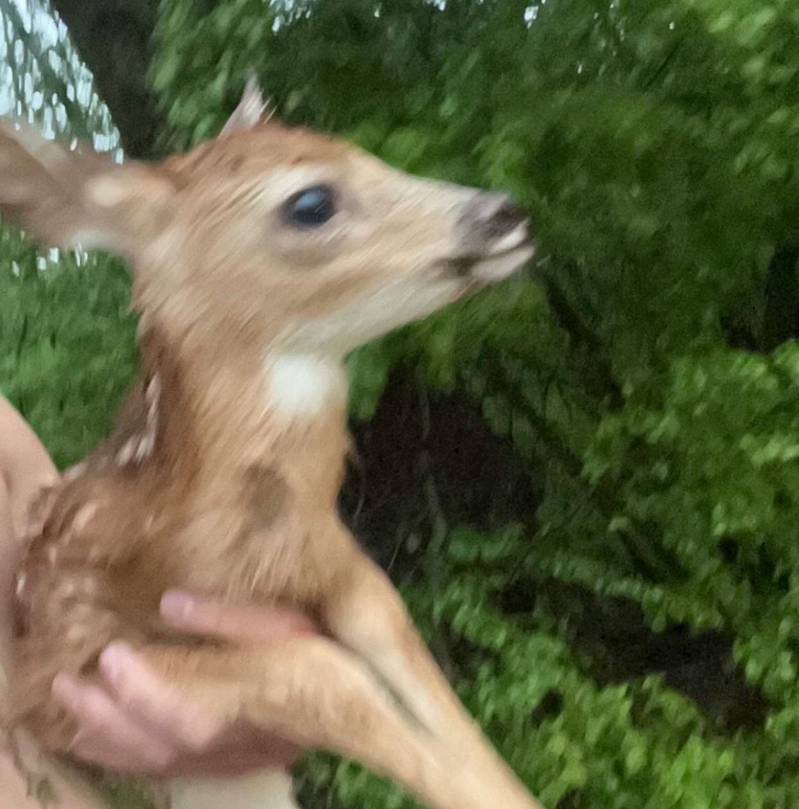

Soccer
I love playing soccer, which has been a big part of my life and taught me teamwork, discipline, and how to push through challenges. During my senior year, I tore my ACL, and the recovery process became one of the most important lessons I've ever had. It pushed me to set goals, work tirelessly, and not just meet them but go beyond what I thought I was capable of. That experience showed me the value of perseverance and dedication in all areas of life.
 



Hunting & Fishing
Hunting and fishing have also been a big part of who I am. My father grew up in the middle of the woods and learned from his grandfather the skills of trapping, hunting, and fishing for food. Watching him pass down these techniques and traditions has taught me patience, respect for nature, and the importance of learning from those who came before you.
 



Helping Others
I'm also passionate about helping others, whether it's supporting the homeless in my community or contributing to projects that improve lives in less fortunate countries. These experiences have shaped my perspective and continue to motivate me to make a meaningful impact.